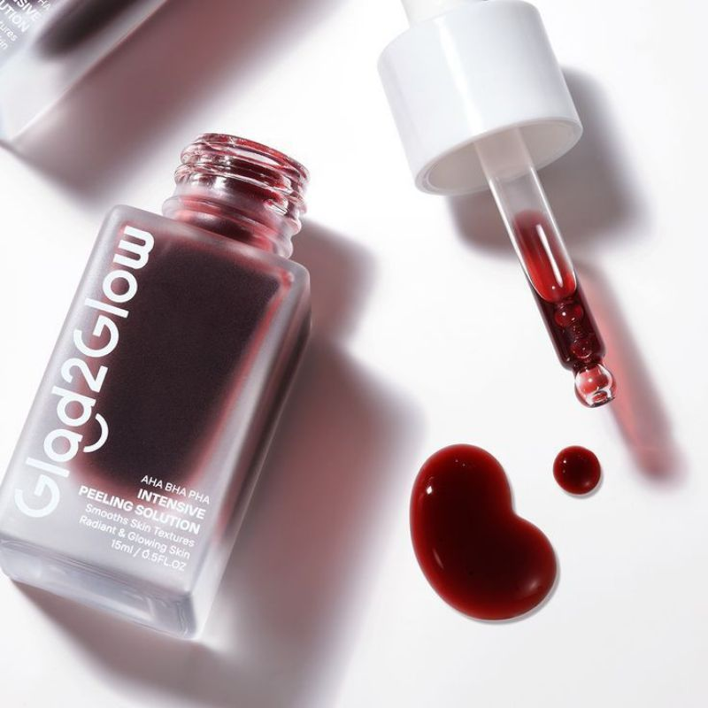

G2G Peeling Eksfoliasi
✅ Detail Produk
Isi Bersih: 15-30 ml
✅ Deskripsi
G2G Peeling Eksfoliasi adalah serum eksfoliasi ringan yang diformulasikan dengan AHA, BHA, dan ekstrak bahan aktif pilihan.
Berfungsi untuk membantu pengelupasan sel kulit mati secara lembut, membersihkan pori-pori, dan mempercepat regenerasi kulit agar tampak lebih cerah, halus, dan segar.
✅ Manfaat Utama
- Mengeksfoliasi kulit mati secara lembut
- Membantu membersihkan komedo dan pori-pori tersumbat
- Meratakan tekstur kulit agar lebih halus
- Membantu mencerahkan kulit kusam
- Mengurangi tampilan noda hitam dan bekas jerawat ringan
✅ Cara Pakai
Gunakan 1–2 kali seminggu pada malam hari setelah membersihkan wajah dan menggunakan toner.
Teteskan secukupnya pada telapak tangan, ratakan ke wajah, hindari area mata & bibir.
Diamkan, tidak perlu dibilas. Gunakan sunscreen keesokan harinya.
✅ Harga
Rp47.000
← Kembali Belanja